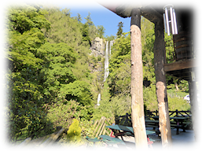
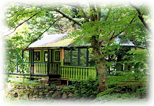
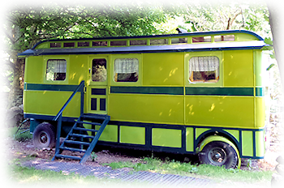
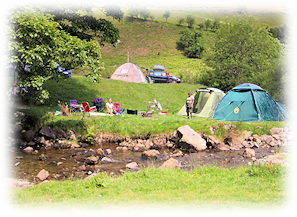

Accommodation
Guest Stays
Apartment

Our accommodation is very popular, with many returning visitors. We're a family-run
establishment
that is warm,accommodating and friendly.
We offer two en-suite double bedrooms in the upstairs of the cafe as a self-contained holiday
unit,
with adjoining kitchen, lounge and private balcony.
Prices: £260.00 for two nights for 2 people (breakfast incl), or £320.00 for four people
for
two nights (not incl breakfast).
£80 Deposit Requierd on Booking.
Chalet

We also offer a Chalet which is secluded and self-contained. Most suitable for people who want
to
self-cater.
Overlooking the river and in sight of the falls. Perfect if you'd like to hide away in an
idyllic
fairy glen.
Prices: £260.00 for two people for two nights. For a longer duration please contact us.
Showman's Retreat Caravan
 Other accommodation includes a restored 1940s genuine Showmans Caravan. Located in the lower meadow for privacy and silentness.
The living area incorporates a hob kitchen, dining area and a small double bed. The heating is electric with an optional coal/wood fire-box.
Prices: £260.00 for two nights for two people.
Camping

The campsite at Pistyll Rhaeadar is a stones throw from the falls. Located at the end of a
valley on
mostly flat pastureland with the river from the falls flowing through the centre.
The campsite caters for campers, caravanners and groups. Access is available through our
membership scheme.
(See below).
Charges:
Tents or Caravans (up to 14ft) £7 per person per night. Children under 3 go free. Max
family
price £28 per night.
Campsite Membership - entitles you to pre book on our campsite up to 2 weeks in advance.
Annual membership costs £25.
To become a member please send your full name, address, telephone number, car registration and
family details (e.g. 2 adults and 3 children) to Tan y Pistyll, Waterfall Street,
Llanrhaeadr YM, Powys, SY10 0BZ Cheques payable to Tan y Pistyll.